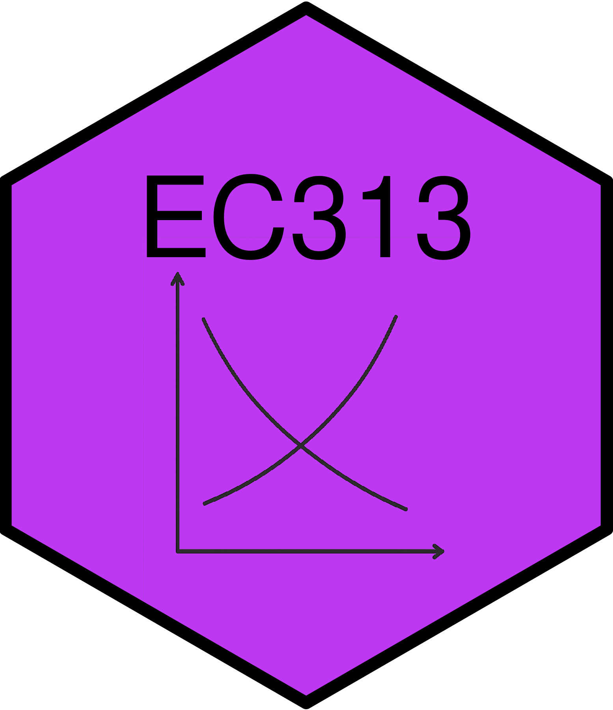
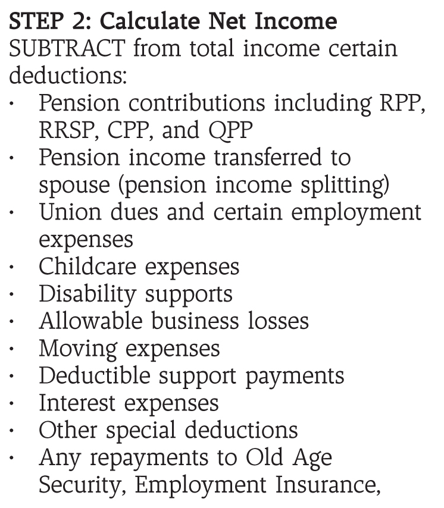
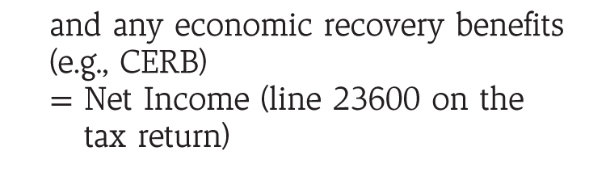

Outline history of personal income taxes in Canada
Describe how taxes are calculated
Discuss different concepts of income
Discuss tax rates
Explore other issues in income taxation
Income tax first introduced federally in Canada in 1917 to help finance WWI
Provinces began introducing income taxes earlier, in the late 1800s (BC, PEI)
Currently, both federal and provincial governments levy personal income taxes
Canada Revenue Agency (CRA) administers federal and most provincial income taxes
Because of this integration, people fill out one tax return for both federal and provincial taxes
Up to 2000 provincial taxes operated on a “tax on tax” system
Since then provinces have moved to a “tax on income” system
System based on self-assessment
Taxpayers have until April 30 of the following year to file their tax returns
If you don’t earn income, you don’t have to file a tax return
The computation of your tax liability can be complicated
The CRA provides tax forms to help you compute your taxes
The main federal tax form is the T1
Packages available here: https://www.canada.ca/en/revenue-agency/services/forms-publications/tax-packages-years.html
The tax forms guide you through a series of steps to calculate your taxes
The process is algorithmic, and can be summarized in six main steps outlined in the next slides
Some key things to note
 
No definition of income in the Income Tax Act
Haig-Simons definition is often used in public finance
Includes actual and potential increase in consumption ability
Also means decreases in consumption ability are negative income
Employer pension contributions
Transfer payments
Capital gains/losses
In-kind income
Gifts and inheritances
This concept of income is sometimes hard to implement in practice.
Business expenses
Capital gains/losses
Imputed rent
In-kind income
Haig-Simons income is a comprehensive measure of ability to pay
Horizontal and vertical equity
Efficiency
Much of the income counted in personal income taxes aligns with Haig-Simons
But there are some departures
Capital gains are a notable departure
These departures can lead to differences in asset value over time
To see this with realized vs unrealized gains, consider this example
| Year | Start Year Value | Gain | Taxable Gain | Tax | End Year Value |
|---|---|---|---|---|---|
| 1 | 100.00 | 20.00 | 0.00 | 0.00 | 120.00 |
| 2 | 120.00 | 24.00 | 0.00 | 0.00 | 144.00 |
| 3 | 144.00 | 28.80 | 0.00 | 0.00 | 172.80 |
| 4 | 172.80 | 34.56 | 0.00 | 0.00 | 207.36 |
| 5 | 207.36 | 41.47 | 0.00 | 0.00 | 248.83 |
| Year | Start Year Value | Gain | Taxable Gain | Tax | End Year Value |
|---|---|---|---|---|---|
| 1 | 100.00 | 20.00 | 10.00 | 5.00 | 115.00 |
| 2 | 115.00 | 23.00 | 11.50 | 5.75 | 132.25 |
| 3 | 132.25 | 26.45 | 13.23 | 6.61 | 152.09 |
| 4 | 152.09 | 30.42 | 15.21 | 7.60 | 174.90 |
| 5 | 174.90 | 34.98 | 17.49 | 8.75 | 201.14 |
Taxation of realized gains locks in investments
This can lead to inefficiencies in the economy
Conservatives proposed an deferral of taxation for investing in Canadian companies
What if a person holds unrealized gains at death?
Why preferential treatment of capital gains?
Contributions to pension plans (employee and employer) are not included in income until paid out
Allows people to defer taxes until retirement
Interest also not taxed until withdrawn
Encourages saving for retirement
But a departure from Haig-Simons definition of income
Finally gifts and inheritances are not taxed
We discussed how income is calculated for tax purposes
There is a difference between
Total income and taxable income
Taxes owing and taxes payable
There are various reasons for deductions and credits
Tax Deduction: An amount that can be subtracted from total income to arrive at taxable income
In Canada, the main goals of deductions are to
Most deductions are for expenses to earn income
Most others are to encourage saving
First home buyers plan is deductible and not taxed when withdrawn
Some savings plans are not tax deductible but interest grows tax free - Tax Free Savings Plans - Registered Education Savings Plans
Finally, some deductions exist for other reasons
Tax Credit: An amount that can be subtracted from taxes owing to arrive at taxes payable
These are different from deductions
There are two types:
There are many credits available for different purposes
Many credits are 15% of the eligible amount
Others are different amounts
Some notable credits are:
Basic personal amount credit
Age amount credit
CPP and EI credit
Medical expenses
Charitable donations
Canada Workers Benefit
Boutique credits
GST/HST credit
Tuition credit
One effect of deductions and credits is to alter prices for certain types of consumption
A good example is charitable donations
In Ontario, for a $100 donation you would receive a federal credit of $15 and a provincial credit of $5.05
In the United States, donors receive a deduction rather than a credit
Above example highlights a more general issue: benefits from deductions depend on tax bracket
Many credits in Canada were deductions prior to 1988
Likely not optimal from an efficiency perspective
But credits are simpler and viewed as more equitable
Deductions and credits reduce taxes collected by the government
These can be substantial amounts of money
This reduction in taxes is viewed as a form of indirect government spending called tax expenditures
The Canadian government tracks tax expenditures and reports them annually
In 2025, projected to be $183 billion federally (6% of GDP)
Canada has a progressive tax system
Uses a bracket system
The tax you pay on an additional dollar of income is called the marginal tax rate
The rate in a particular bracket is the marginal tax rate on each dollar in the bracket
The rates shown are statutory marginal tax rates
But earning one dollar more income can affect other government programs that affect how much of that dollar you keep
The total effect is called the effective marginal tax rate
Several factors can drive a wedge between statutory and effective marginal tax rates
Surtaxes: additional taxes applied when income exceeds certain thresholds
Payroll taxes: taxes on earnings to fund social programs (e.g., CPP, EI)
Clawbacks: as income increases, eligibility for certain programs decreases
What matters for individual decision making is the effective marginal tax rate
With the myriad of deductions and credits, it is possible to pay little or no tax despite high income
Canada has an Alternative Minimum Tax (AMT) to ensure high-income earners pay a minimum level of tax
To calculate AMT, taxpayers add back certain deductions and credits to their taxable income
Applies the normal tax rates to this adjusted income to calculate a minimum tax liability
We already discussed the differences between statutory and effective marginal tax rates
This discussion can be broadened to consider these economic factors
Simply looking at the statutory tax rates ignores these factors
Some economists have proposed a flat tax as a way to simplify the tax system and reduce excess burden
Pros of a flat tax would be
Cons are
The current tax unit in Canada is the individual
Some countries use the family or household as the tax unit
Which is the better approach?
Rosen, Harvey S., and Lindsay M. Tedds, and Trevor Tombe, and Jean-Francois Wen, and Tracy Snoddon. Public Finance in Canada. 6th Canadian edition. McGraw-Hill Ryerson, 2023.
Gruber, Jonathan. Public Finance and Public Policy. 7th edition. Worth Publishers, 2022.
Bazel, Philip. Marginal Effective Tax Rates for Working Families in Canada. Fraser Institute, 2024.